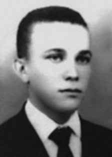

Ezequias
Bezerra
da Rocha
CIRCUNSTÂNCIAS DA MORTE
Ezequias Bezerra da Rocha era o proprietário do automóvel Volkswagen emprestado à Miriam Lopes Verbena, no dia 8 de março de 1972. Nessa ocasião e data, Miriam morreu, juntamente com seu marido, Luis Aberto Andrade Sá e Benevides, ambos militantes do PCBR, em um acidente automobilístico, cujas circunstâncias nunca foram totalmente esclarecidas.
No momento da prisão e do subsequente desaparecimento forçado, Ezequias estava com viagem marcada para Salvador (BA), onde faria pós-graduação na área de geofísica, e os seus irmãos estavam lhe auxiliando a providenciar a venda do veículo danificado no acidente com o casal Miriam Lopes e Luis Alberto. Ezequias não estava na clandestinidade, tampouco era perseguido pelos órgãos de segurança no momento anterior à sua prisão, segundo as pesquisas efetuadas pela CNV e pela CEMVDHC, tanto que, após o acidente com Miriam Lopes Verbena e Luis Alberto Sá e Benevides, ele foi voluntariamente com seu irmão para Caruaru, no dia 9 de março de 1972, para tentar resgatar os destroços do carro que havia emprestado ao casal, nos departamentos policiais competentes.
Por ser o proprietário do veículo conduzido pelo casal de militantes do partido, Ezequias foi associado pelos órgãos de segurança às ações do PCBR (Partido Comunista Brasileiro Revolucionário) no Estado. Documento da Delegacia de Segurança Social registrou o Pedido de Busca nº 12-DSS/72, de 10 de março de 1972, cujo assunto foi a “localização e captura de elemento subversivo”, em referência à Ezequias. Na madrugada do dia 11 de março de 1972, por volta de 01h da manhã, Ezequias Bezerra da Rocha e sua esposa, Guilhermina Bezerra da Rocha, foram presos arbitrariamente pelo DOI do IV Exército, e ficaram sob custódia desse órgão.
A prisão do casal pelo DOI do IV Exército, colocados à disposição da Secretaria de Segurança Pública de Pernambuco, também foi informada pelo Delegado do DOPS/PE, Redivaldo Oliveira Acioly, por meio de Ofício enviado ao Ministro Brigadeiro Armando Perdigão, na data de 06 de abril de 1972. Dois meses depois, em 06 de junho de 1972, o delegado do DOPS/PE informou, em resposta ao habeas corpus impetrado pelo advogado Fernando Fragoso no Superior Tribunal Militar, por meio de telegrama enviado ao então ministro Nelson Sampaio, do Superior Tribunal Militar (STM), que “o preso político Ezequias Bezerra da Rocha, havia se evadido e resgatado por elementos não identificados”.
Essa versão oficial foi descrita nos Relatórios das Forças Armadas enviados ao então Ministro da Justiça, Maurício Correa, em dezembro de 1993. Sobre Ezequias, o Relatório da Aeronáutica registra que “[…] preso pelo DOI/IV EX, no, dia 11 Mar 72, tendo sido encontrado em seu poder farto material subversivo. Na noite do dia 11 Mar 72, foi conduzido para a região da Cidade Universitária (BR/232), a fim de cobrir “um ponto”, tendo sido nesta ocasião resgatado por seus companheiros de subversão, os quais o conduziram num VW 1300, cor branca, placa não identificada, apesar de todas as tentativas dos agentes de segurança no sentido de detê-lo, o que ocasionou forte tiroteio de ambos os lados; entretanto, não há dados que comprovem se o mesmo encontra-se morto ou desaparecido.”
Na ficha de antecedentes de Ezequias Bezerra da Rocha na Delegacia de Ordem Social, fornecida pela Secretaria de Segurança Pública de Pernambuco, consta que: “11.03.1972 – foi preso por um Órgão de Segurança para averiguações sobre atividades contrárias à Segurança do Estado. Na mesma data foi posto à disposição desta Secretaria de Segurança Pública, em virtude de haver sido instaurado inquérito policial nesta Delegacia, a fim de apurar atividades do PCBR (Partido Comunista Brasileiro Revolucionário) na área, cujo feito encontra-se em andamento. Segundo informações do órgão de Segurança, o paciente EZEQUIAS BEZERRA DA ROCHA, às 20,00 do mesmo dia de sua prisão, evadiu-se tendo sido resgatado por elementos ainda não identificados.”
Em depoimento prestado após a sua libertação da prisão, Guilhermina descreveu as torturas a que Ezequias foi submetido nas dependências do IV Exército: “Fomos conduzidos para dentro e eu fui posta numa cela enquanto Ezequias foi ao interrogatório. Mas aquilo não era interrogatório, era um verdadeiro massacre aplicado numa pessoa indefesa. De onde eu estava ouvia a pancadaria. Foram horas terríveis. Aquilo parecia mais um pesadelo. Eu queria acordar e não conseguia. Houve momentos em que pensava que o Quias (Ezequias) estava morto, pelo silêncio de dor que se fazia, pois não era possível, tantos bater tanto numa única pessoa. Depois de muito tempo eles pararam de torturá-lo e o colocaram numa cela perto da minha. Quando ele passou por mim, carregado por policiais, parecia um farrapo humano, havia sangue por todas as partes do seu corpo. Não conseguia nem ficar de pé. […] Dormi vencida pelo cansaço. Ao me acordar, procurei imediatamente por ele. Os carcereiros diziam-me simplesmente que não tinha sido preso nenhum Ezequias. Insisti por diversas vezes, porém em vão. Ninguém mais me informou o paradeiro dele. Posso afirmar, categoricamente, que no estado físico em que o vi ele não tinha condições nem de matar uma mosca, quanto mais fugir ou tomar qualquer outra atitude. Eles mataram o meu querido Quias…”
No dia 12 de março de 1972, a Delegacia de Polícia do Município de Escada (PE), por meio do ofício nº 78/72, encaminhou ao Instituto de Medicina Legal do Recife um corpo com características similares às de Ezequias Bezerra da Rocha, localizado na barragem do “Bambu”, no Engenho Massauassú, com sinais de tortura, com pés e mãos amarrados. No mesmo ofício, consta a informação de que o corpo foi deixado por uma “Rural Ford, de cor verde e branca, sem placas”. Os familiares de Ezequias tomaram conhecimento desse fato pela imprensa e, mesmo com a constatação da semelhança entre as características físicas do corpo encontrado e o de Ezequias, foram impedidos pelos agentes dos órgãos policiais de retirar o cadáver, informados de que se referia a uma outra pessoa, já identificada.
Somente em 1991, em trabalho realizado pela Comissão de Pesquisa e Levantamento dos Mortos e Desaparecidos Políticos, em Pernambuco, foi feita uma perícia datiloscópica em prontuário do DOPS/PE nas impressões digitais contidas nesse ofício nº 78/72, proveniente da Delegacia de Polícia do Município de Escada (PE), na qual foi constatada que o corpo sonegado aos familiares era, de fato, o de Ezequias. A CEMVDHC recebeu o Laudo Tanatoscópico e o ofício de remoção do corpo de Ezequias Bezerra da Rocha, encontrados em 12 de novembro de 2013, pela equipe de Catalogação do Acervo do Instituto de Medicina Legal Antônio Persivo Cunha, do Arquivo Público Jordão Emerenciano (APEJE). O laudo descreve as inúmeras lesões no corpo de Ezequias, que atestam as torturas sofridas antes de sua morte e desaparecimento, além de desmontarem a falsa versão de fuga produzida pelos órgãos estatais de segurança.
Por semelhante modo, conforme matéria de Elio Gaspari, o general Vicente de Paulo Dale Coutinho, que seria, posteriormente, Ministro do Exército de Ernesto Geisel, a partir de março de 1974, afirmou ter participado, juntamente com um major, sob seu comando, à época que chefiava o DOI do IV Exército, das ações que culminaram na morte e no desaparecimento de Ezequias Bezerra da Rocha. Ademais, merece ser sublinhado que o coronel do Exército Confúcio Danton de Paula Avelino atuava em função de comando no DOI do IV Exército, no período das mortes de Ezequias Bezerra da Rocha, de Luis Alberto Andrade de Sá e Benevides e de Miriam Lopes Verbena.
Apontado como chefe do DOI-CODI do IV Exército, o coronel Confúcio teria dito, segundo depoimento de Piragibe Castro Alves, em 15 de março de 1998, sobre a morte do casal Luis Alberto e Miriam Lopes: “é verdade, nós acabamos com eles”. De acordo ainda com relato de Piragibe, Reynaldo Benevides, irmão de Luis Alberto Andrade de Sá e Benevides, identificou Confúcio como o Chefe do DOI-CODI do IV Exército, com quem teria tratado pessoalmente em Recife da liberação do corpo de seu irmão, na semana seguinte à morte de Luis Alberto, para conduzi-lo ao Rio de Janeiro, o que não foi autorizado.
Confúcio Danton de Paula Avelino foi nomeado, em 17 de setembro de 1971, Agente Diretor do Quartel General do IV Exército (QG/IV Ex), pelo General Vicente de Paulo Dale Coutinho, e exerceu, ao longo de 1972, de forma alternada, por alguns períodos, a função de Chefe do Estado Maior do IV Exército.
Auxiliar direto do general Vicente de Paulo Dale Coutinho, Confúcio foi elogiado por ele com destaque para sua atuação à frente da repressão no Nordeste, na data de 04 de janeiro de 1973, em Boletim informativo do Exército, na ocasião em que foi promovido ao posto de general, nos seguintes termos: “Chefe do EM da 2º RM, no período mais aguado da subversão no Brasil que escolheu o Estado de São Paulo como principal teatro para suas operações. […] Perdi-o, justamente nesse período difícil, quando foi escolhido pelo próprio Presidente da República para comandar a Polícia Militar de São Paulo, onde prestou reais serviços a esse Estado da Federação naquela luta contra a subversão. Durante meu comando no IV Exercito, mais uma vez, contei com a prestimosa colaboração deste brilhante oficial, nas funções de Subchefe do meu Estado-Maior, constituindo no elemento chave de toda a luta contra o terrorismo no Nordeste, nesse período, e que agora, vem alcançar as estrelas do generalato na Chefia de meu Gabinete no meu DMB (Departamento de Material Bélico).”
A família não conseguiu, até o presente momento, ter acesso ao corpo de Ezequias, razão pela qual os efeitos de desaparecimento forçado permanecem.
Ezequias Bezerra da Rocha was the owner of the Volkswagen car loaned to Miriam Lopes Verbena, on March 8, 1972. On that occasion and date, Miriam died, together with her husband, Luis Aberto Andrade Sá and Benevides, both PCBR activists, in a car accident, the circumstances of which were never fully clarified.
At the time of his arrest and subsequent forced disappearance, Ezequias was scheduled to travel to Salvador (BA), where he would pursue postgraduate studies in the field of geophysics, and his brothers were helping him arrange the sale of the vehicle damaged in the accident with the couple Miriam Lopes and Luis Alberto. Ezequias was not in hiding, nor was he persecuted by security agencies at the time before his arrest, according to research carried out by the CNV and CEMVDHC, so much so that, after the accident with Miriam Lopes Verbena and Luis Alberto Sá e Benevides, he voluntarily went with his brother to Caruaru, on March 9, 1972, to try to recover the wreckage of the car he had lent to the couple, at the competent police departments.
As the owner of the vehicle driven by the couple of party activists, Ezequias was associated by security agencies with the actions of the PCBR (Brazilian Revolutionary Communist Party) in the State. Document from the Social Security Office registered Search Request No. 12-DSS/72, dated March 10, 1972, the subject of which was the “location and capture of a subversive element”, in reference to Ezequias. In the early hours of March 11, 1972, around 1 am, Ezequias Bezerra da Rocha and his wife, Guilhermina Bezerra da Rocha, were arbitrarily arrested by the DOI of the IV Army, and were placed in the custody of that body.
The arrest of the couple by the DOI of the IV Army, placed at the disposal of the Public Security Secretariat of Pernambuco, was also reported by the DOPS/PE Delegate, Redivaldo Oliveira Acioly, through a letter sent to Minister Brigadier Armando Perdigão, on April 6, 1972. Two months later, on June 6, 1972, the DOPS/PE delegate informed, in response to the habeas corpus filed by the lawyer Fernando Fragoso at the Superior Military Court, in a telegram sent to the then minister Nelson Sampaio, of the Superior Military Court (STM), that “political prisoner Ezequias Bezerra da Rocha had escaped and was rescued by unidentified elements”.
This official version was described in the Armed Forces Reports sent to the then Minister of Justice, Maurício Correa, in December 1993. Regarding Ezequias, the Air Force Report records that “[…] arrested by DOI/IV EX, on 11 Mar 72, having found in his possession plenty of subversive material. On the night of 11 Mar 72, he was taken to the region of Cidade Universitária (BR/232), in order to cover “a point”, having been rescued on this occasion by his fellow subverters, who drove him in a white VW 1300, with an unidentified license plate, despite all attempts by security agents to stop him, which led to heavy shooting on both sides; however, there is no data to prove whether he is dead or missing.”
In Ezequias Bezerra da Rocha's background record at the Social Order Police Station, provided by the Public Security Secretariat of Pernambuco, it is stated that: "11.03.1972 - he was arrested by a Security Body for investigations into activities contrary to State Security. On the same date he was made available to this Public Security Secretariat, due to the fact that a police investigation had been opened at this Police Station, in order to investigate the activities of the PCBR (Party Revolutionary Brazilian Communist) in the area, which is ongoing. According to information from the Security Agency, the patient EZEQUIAS BEZERRA DA ROCHA, at 8 pm on the same day of his arrest, escaped and was rescued by elements that have not yet been identified.”
In a statement given after her release from prison, Guilhermina described the torture to which Hezequias was subjected on the premises of the IV Army: “We were taken inside and I was put in a cell while Hezekiah went for interrogation. But that wasn't interrogation, it was a real massacre carried out on a defenseless person. From where I was I could hear the beating. Those were terrible hours. This felt more like a nightmare. I wanted to wake up and I couldn't. There were moments when I thought that Kiah (Hezekiah) was dead, because of the silence of pain that followed, as it was not possible for so many people to hit a single person so much. After a long time they stopped torturing him and placed him in a cell close to mine. When he passed me, carried by police officers, he looked like a human rag, there was blood on every part of his body. I couldn't even stand up. […] I slept overcome by tiredness. When I woke up, I immediately looked for him. The jailers simply told me that no Hezekiah had been arrested. I insisted several times, but in vain. No one else informed me of his whereabouts. I can categorically say that in the physical state in which I saw him he was in no condition to even kill a fly, let alone run away or take any other action. They killed my dear Chias…”
On March 12, 1972, the Police Station of the Municipality of Escada (PE), through letter nº 78/72, sent to the Institute of Legal Medicine of Recife a body with characteristics similar to those of Ezequias Bezerra da Rocha, located in the “Bambu” dam, at Engenho Massauassú, with signs of torture, with feet and hands tied. The same letter states that the body was left by a “Rural Ford, green and white, without license plates”. Ezequias' family members became aware of this fact through the press and, even with the similarity between the physical characteristics of the body found and that of Ezequias, they were prevented by police officers from removing the body, informed that it referred to another person, already identified.
Only in 1991, in work carried out by the Commission for Research and Survey of Political Dead and Disappeared, in Pernambuco, was a fingerprint examination carried out on the DOPS/PE records on the fingerprints contained in this letter nº 78/72, coming from the Police Station of the Municipality of Escada (PE), in which it was found that the body withheld from family members was, in fact, that of Ezequias. CEMVDHC received the Tanatoscopic Report and the letter of removal of the body of Ezequias Bezerra da Rocha, found on November 12, 2013, by the Collection Cataloging team of the Institute of Legal Medicine Antônio Persivo Cunha, from the Jordão Emerenciano Public Archive (APEJE). The report describes the numerous injuries on Ezequias' body, which attest to the torture suffered before his death and disappearance, in addition to dismantling the false version of escape produced by state security agencies.
In a similar way, according to an article by Elio Gaspari, General Vicente de Paulo Dale Coutinho, who would later be Minister of the Army under Ernesto Geisel, from March 1974, claimed to have participated, together with a major, under his command, at the time he headed the DOI of the IV Army, in the actions that culminated in the death and disappearance of Ezequias Bezerra da Rocha. Furthermore, it is worth highlighting that Army Colonel Confúcio Danton de Paula Avelino served in a command role in the DOI of the IV Army, during the period of the deaths of Ezequias Bezerra da Rocha, Luis Alberto Andrade de Sá e Benevides and Miriam Lopes Verbena.
Appointed as head of DOI-CODI of the IV Army, Colonel Confúcio reportedly said, according to testimony from Piragibe Castro Alves, on March 15, 1998, about the death of the couple Luis Alberto and Miriam Lopes: “it's true, we finished them off”. According to Piragibe's report, Reynaldo Benevides, brother of Luis Alberto Andrade de Sá e Benevides, identified Confúcio as the Chief of DOI-CODI of the IV Army, with whom he would have personally dealt with in Recife regarding the release of his brother's body, in the week following Luis Alberto's death, to take him to Rio de Janeiro, which was not authorized.
Confúcio Danton de Paula Avelino was appointed, on September 17, 1971, Director Agent of the General Headquarters of the IV Army (QG/IV Ex), by General Vicente de Paulo Dale Coutinho, and held, throughout 1972, alternately, for some periods, the role of Chief of Staff of the IV Army.
A direct assistant to General Vicente de Paulo Dale Coutinho, Confúcio was praised by him, highlighting his performance at the forefront of repression in the Northeast, on January 4, 1973, in the Army Newsletter, at the time he was promoted to the rank of general, in the following terms: “Head of the EM of the 2nd RM, in the most intense period of subversion in Brazil, which chose the State of São Paulo as the main theater for its operations. […] I lost him, precisely during this difficult period, when he was chosen by the President of the Republic himself to command the Military Police of São Paulo, where he provided real services to this State of the Federation in the fight against subversion. During my command of the IV Army, once again, I counted on the helpful collaboration of this brilliant officer, in his role as Deputy Chief of my General Staff, constituting a key element in the entire fight against terrorism in the Northeast, during this period, and who now reaches the stars of generalship as Head of my Cabinet in my country. DMB (Department of Ordnance).”
Until now, the family has not been able to access Hezekiah's body, which is why the effects of forced disappearance remain.
Ezequias Bezerra da Rocha era propietario del automóvil Volkswagen prestado a Miriam Lopes Verbena, el 8 de marzo de 1972. En esa ocasión y fecha, Miriam falleció, junto con su esposo, Luis Aberto Andrade Sá y Benevides, ambos activistas del PCBR, en un accidente automovilístico, cuyas circunstancias nunca fueron esclarecidas del todo.
Al momento de su detención y posterior desaparición forzada, Ezequias tenía previsto viajar a Salvador (BA), donde realizaría estudios de posgrado en el campo de geofísica, y sus hermanos lo ayudaban a gestionar la venta del vehículo dañado en el accidente con el matrimonio Miriam Lopes y Luis Alberto. Ezequias no se escondía ni era perseguido por los organismos de seguridad en el momento previo a su detención, según investigaciones realizadas por la CNV y el CEMVDHC, tanto es así que, después del accidente de Miriam Lopes Verbena y Luis Alberto Sá e Benevides, se dirigió voluntariamente con su hermano a Caruaru, el 9 de marzo de 1972, para intentar recuperar los restos del automóvil que había prestado al matrimonio, en las autoridades competentes. departamentos de policía.
Como propietario del vehículo conducido por la pareja de militantes del partido, Ezequias fue asociado por organismos de seguridad con las acciones del PCBR (Partido Comunista Revolucionario Brasileño) en el estado. Documento de la Caja de Seguro Social registrado Solicitud de Búsqueda No. 12-DSS/72, de 10 de marzo de 1972, cuyo tema era la “localización y captura de un elemento subversivo”, en referencia a Ezequias. En la madrugada del 11 de marzo de 1972, alrededor de la 1 de la madrugada, Ezequias Bezerra da Rocha y su esposa, Guilhermina Bezerra da Rocha, fueron detenidos arbitrariamente por el DOI del IV Ejército, y puestos bajo custodia de ese organismo.
La detención de la pareja por el DOI del IV Ejército, puesto a disposición de la Secretaría de Seguridad Pública de Pernambuco, también fue informada por el Delegado del DOPS/PE, Redivaldo Oliveira Acioly, a través de carta enviada al Ministro Brigadier Armando Perdigão, el 6 de abril de 1972. Dos meses después, el 6 de junio de 1972, el delegado del DOPS/PE informó, en respuesta al habeas corpus interpuesto por el abogado Fernando Fragoso. en el Tribunal Superior Militar, en un telegrama enviado al entonces ministro Nelson Sampaio, del Tribunal Superior Militar (STM), que “el preso político Ezequias Bezerra da Rocha se había fugado y fue rescatado por elementos no identificados”.
Esta versión oficial fue descrita en los Informes de las Fuerzas Armadas enviados al entonces Ministro de Justicia, Maurício Correa, en diciembre de 1993. Respecto a Ezequias, el Informe de las Fuerzas Aéreas registra que "[...] detenido por el DOI/IV EX, el 11 de marzo de 72, habiendo encontrado en su poder abundante material subversivo. En la noche del 11 de marzo de 72, fue trasladado a la región de Ciudad Universitaria (BR/232), con el fin de cubrir "una punto”, habiendo sido rescatado en esta ocasión por sus compañeros subvertidores, quienes lo conducían en un VW 1300 blanco, con matrícula no identificada, a pesar de todos los intentos de los agentes de seguridad por detenerlo, lo que provocó fuertes disparos en ambos lados, sin embargo, no hay datos que acrediten si está muerto o desaparecido”.
En el expediente de antecedentes de Ezequias Bezerra da Rocha en la Comisaría de Orden Social, facilitado por la Secretaría de Seguridad Pública de Pernambuco, consta que: "03.11.1972 - fue detenido por un Cuerpo de Seguridad para investigaciones sobre actividades contrarias a la Seguridad del Estado. En la misma fecha fue puesto a disposición de esta Secretaría de Seguridad Pública, debido a que en esta Comisaría se había abierto una investigación policial, con el fin de investigar las actividades del PCBR (Partido Revolucionario Comunista Brasileño) en En la zona, lo cual se encuentra en proceso, según información del Organismo de Seguridad, el paciente EZEQUIAS BEZERRA DA ROCHA, a las 8 de la noche del mismo día de su detención, se dio a la fuga y fue rescatado por elementos que aún no han sido identificados”.
En una declaración dada tras su salida de prisión, Guilhermina describió las torturas a las que fue sometido Hezequias en las instalaciones del IV Ejército: “Nos llevaron adentro y a mí me metieron en una celda mientras Hezekiah era interrogado. Pero eso no fue un interrogatorio, fue una verdadera masacre perpetrada contra una persona indefensa. Desde donde estaba podía escuchar los golpes. Fueron horas terribles. Esto se sintió más como una pesadilla. Quería despertarme y no pude. Hubo momentos en los que pensé que Kiah (Ezequías) estaba muerto, por el silencio de dolor que siguió, ya que no era posible que tanta gente golpeara tanto a una sola persona. Después de mucho tiempo dejaron de torturarlo y lo colocaron en una celda cercana a la mía. Cuando pasó a mi lado, llevado por policías, parecía un harapo humano, había sangre en cada parte de su cuerpo. Ni siquiera podía levantarme. […] Dormí vencido por el cansancio. Cuando desperté, inmediatamente lo busqué. Los carceleros simplemente me dijeron que no habían arrestado a Ezequías. Insistí varias veces, pero fue en vano. Nadie más me informó de su paradero. Puedo decir categóricamente que en el estado físico en el que lo vi no estaba en condiciones de matar ni siquiera una mosca, mucho menos salir corriendo o realizar cualquier otra acción. Mataron a mi querido Chias…”
El 12 de marzo de 1972, la Comisaría del Municipio de Escada (PE), mediante oficio nº 78/72, envió al Instituto de Medicina Legal de Recife un cadáver de características similares a los de Ezequias Bezerra da Rocha, ubicado en la presa “Bambu”, en Engenho Massauassú, con signos de tortura, atado de pies y manos. En el mismo escrito se señala que la carrocería la dejó un “Ford Rural, verde y blanco, sin placas”. Los familiares de Ezequias tomaron conocimiento de este hecho a través de la prensa y, aún con la similitud entre las características físicas del cuerpo encontrado y el de Ezequias, fueron impedidos por agentes policiales para retirar el cuerpo, informándoles que se refería a otra persona, ya identificada.
Sólo en 1991, en un trabajo realizado por la Comisión de Investigación y Estudio de Muertos y Desaparecidos Políticos, en Pernambuco, se realizó un examen dactiloscópico en los registros del DOPS/PE a las huellas contenidas en esta carta nº 78/72, procedente de la Comisaría del Municipio de Escada (PE), en el que se constató que el cuerpo retenido a los familiares era, en realidad, el de Ezequias. El CEMVDHC recibió el Informe Tanatoscópico y la carta de levantamiento del cuerpo de Ezequias Bezerra da Rocha, encontrado el 12 de noviembre de 2013, por el equipo de Catalogación de Colección del Instituto de Medicina Legal Antônio Persivo Cunha, del Archivo Público Jordão Emerenciano (APEJE). El informe describe las numerosas heridas en el cuerpo de Ezequias, que dan fe de las torturas sufridas antes de su muerte y desaparición, además de desmantelar la falsa versión de fuga producida por los organismos de seguridad del Estado.
De manera similar, según un artículo de Elio Gaspari, el general Vicente de Paulo Dale Coutinho, quien luego sería Ministro del Ejército de Ernesto Geisel, a partir de marzo de 1974, afirmó haber participado, junto a un mayor, bajo su mando, en la época en que dirigía el DOI del IV Ejército, en las acciones que culminaron con la muerte y desaparición de Ezequias Bezerra da Rocha. Además, vale destacar que el Coronel del Ejército Confúcio Danton de Paula Avelino desempeñó un rol de mando en el DOI del IV Ejército, durante el período de la muerte de Ezequias Bezerra da Rocha, Luis Alberto Andrade de Sá e Benevides y Miriam Lopes Verbena.
Designado jefe del DOI-CODI del IV Ejército, el coronel Confúcio habría dicho, según testimonio de Piragibe Castro Alves, el 15 de marzo de 1998, sobre la muerte del matrimonio Luis Alberto y Miriam Lopes: “es verdad, los rematamos”. Según el informe de Piragibe, Reynaldo Benevides, hermano de Luis Alberto Andrade de Sá e Benevides, identificó a Confúcio como el Jefe del DOI-CODI del IV Ejército, con quien habría tratado personalmente en Recife para la liberación del cuerpo de su hermano, en la semana siguiente a la muerte de Luis Alberto, para llevarlo a Río de Janeiro, lo que no estaba autorizado.
Confúcio Danton de Paula Avelino fue nombrado, el 17 de septiembre de 1971, Agente Director del Cuartel General del IV Ejército (QG/IV Ex), por el General Vicente de Paulo Dale Coutinho, y desempeñó, a lo largo de 1972, alternativamente, durante algunos períodos, el cargo de Jefe de Estado Mayor del IV Ejército.
Asistente directo del general Vicente de Paulo Dale Coutinho, Confúcio fue elogiado por él, destacando su actuación al frente de la represión en el Nordeste, el 4 de enero de 1973, en el Boletín del Ejército, en el momento de su ascenso al grado de general, en los siguientes términos: “Jefe del EM de la 2.ª RM, en el período más intenso de la subversión en Brasil, que eligió el Estado de São Paulo como principal teatro de operaciones. […] Perdí él, precisamente en este difícil período, cuando fue elegido por el propio Presidente de la República para comandar la Policía Militar de São Paulo, donde prestó verdaderos servicios a este Estado de la Federación en la lucha contra la subversión. Durante mi mando del IV Ejército, una vez más conté con la servicial colaboración de este brillante oficial, en su calidad de Subjefe de mi Estado Mayor, constituyendo un elemento clave en toda la lucha contra el terrorismo en el Nordeste, durante este período, y que ahora alcanza las estrellas del generalato como Jefe de mi Gabinete. país DMB (Departamento de Artillería)”.
Hasta el momento la familia no ha podido acceder al cuerpo de Ezequías, por lo que persisten los efectos de la desaparición forzada.